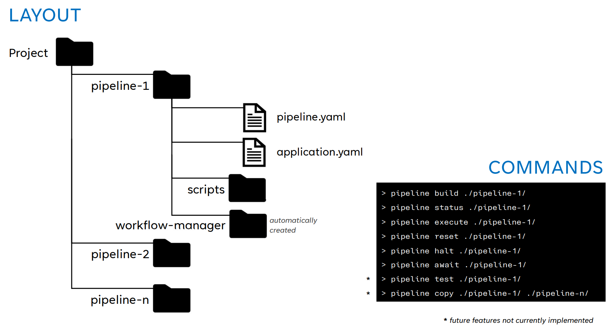

Implementation
simple-action-pipeline is a python package which can create and run configuration based pipelines. There are three core principles underpinning the package implementation:
-
Sequential
Any pipeline is constructed from one or more 'actions' to be executed in sequence. Executing the pipeline will run through that sequence once. Each 'action' is a user created script (either a shell script or python script). -
Dependant
Any 'action' (script) can be configured to have zero, one or many other 'actions' on which it is dependant. This is strictly enforced by simple-action-pipeline in that no 'action' may start until all configured dependancy 'actions' have completed successfully. -
Stateful
simple-action-pipeline uses a workflow manager to maintain statefullness of the entire pipeline and all configured 'actions' within it. This statefullness is held "on-disk" rather than "in-memory" which means that a pipeline's state can be queried before, during or after the pipeline is executed.
Components of a pipeline
-
Pipeline directory
Contains everything required to configure, build and run a pipeline. The diagram below shows how a project could have multiple independant pipelines. -
Pipeline configuration
pipeline.yaml
A yaml configuration file for the pipeline. -
Application configuration
application.yaml
A yaml configuration file for the 'application'. Here the 'application' refers to what you want the pipelines to do and how you want to do it. -
Scripts directory
Where to put the user written 'actions' (scripts) that form the pipeline. This is not strictly enforced and can be configured to be any directory, although for neatness it helps to be inside the pipeline directory. -
workflow-manager directory
This directory is automatically generated when the pipeline is built for the first time. After that, this directory holds live stateful information about the pipeline.
Layout and Commands

Commands
In the diagram above there are examples of the CLI commands supported by simple-action-pipeline. For detailed information on supported commands, see the Usage section.